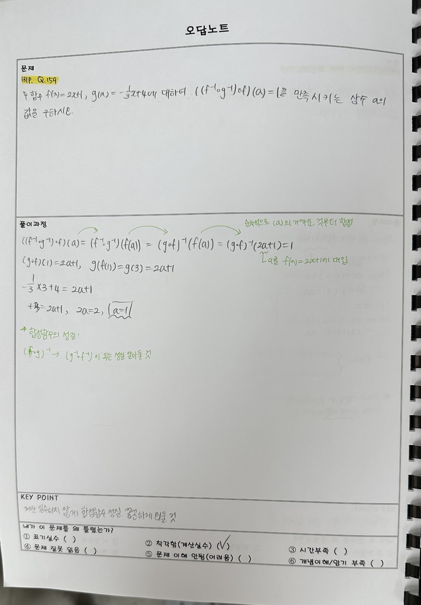
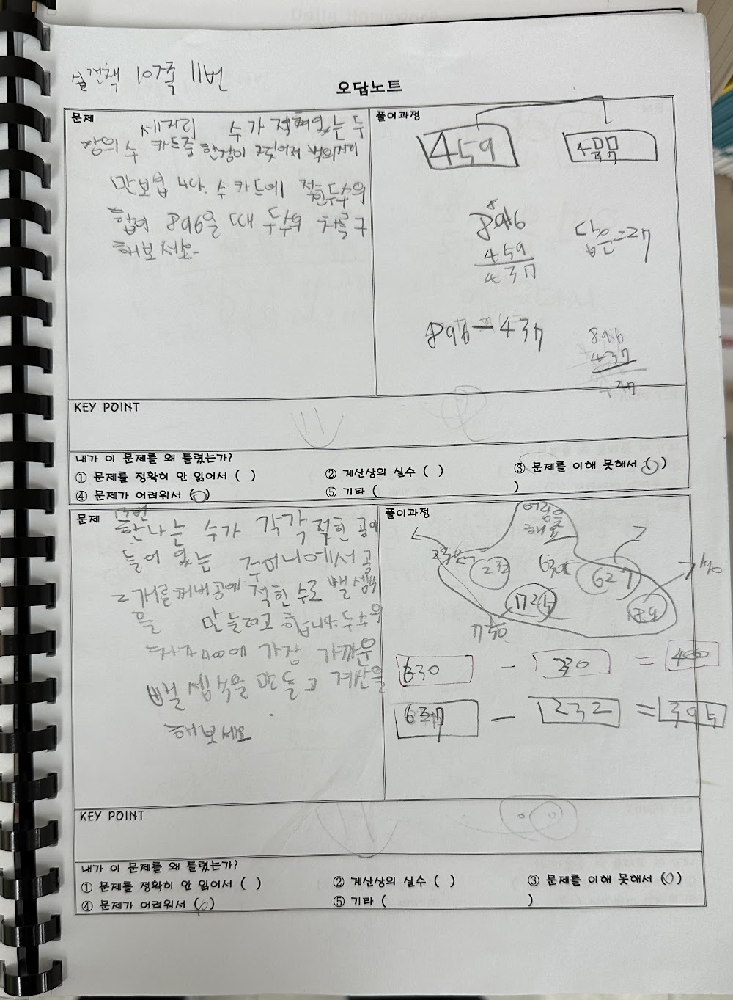
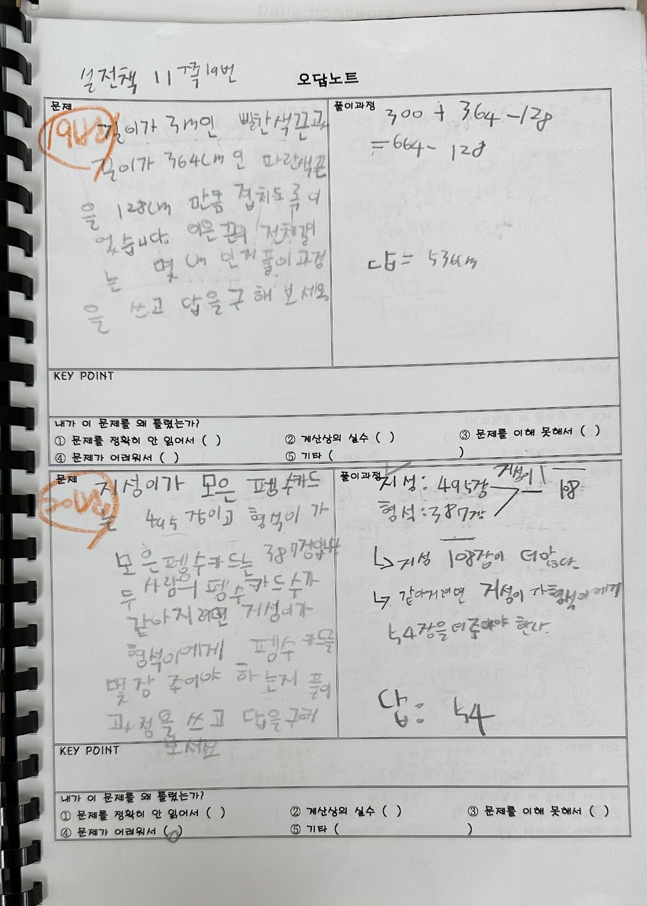

안녕하세요, 마포구 염리동 와와학습코칭 마포점입니다. 이번 주 마포점은 학부모 상담 주간이었습니다. 여러 어머님·아버님과 이야기를 나누며 공통으로 나온 고민이 있어, 오늘은 그 이야기를 나눠보려 합니다.
"공부 얘기만 하면 싸워요"
상담에서 가장 많이 들은 말입니다. 아이를 걱정해서 꺼낸 말이 결국 다툼으로 끝나고, 그 뒤로는 서로 공부 얘기를 피하게 됩니다. 특히 사춘기에 접어든 중등 학생일수록 그렇습니다.
많은 경우 문제는 내용이 아니라 질문의 방식에 있습니다. "공부 안 하니?", "숙제 다 했어?"라는 질문은 아이에게 추궁으로 들립니다. 대답은 늘 "했어"거나 "알아서 할게"로 끝납니다.

이렇게 물어보시면 대화가 열립니다
상담에서 학부모님들께 드린 제안입니다. 작은 차이지만 아이의 반응이 달라집니다.
- "공부했어?" 대신 → "오늘 뭐가 제일 어려웠어?"
- "몇 점 맞았어?" 대신 → "어떤 문제가 아깝게 틀렸어?"
- "왜 안 해?" 대신 → "뭐부터 하면 좋을지 같이 정해볼까?"
- 결과보다 그날의 노력을 알아봐 주기
추궁이 아니라 궁금해하는 질문에는 아이가 대답합니다. 그리고 대답하는 과정에서 스스로 자기 상태를 정리하게 됩니다.

집과 센터가 같은 방향을 볼 때
학원에 맡겼다고 끝이 아닙니다. 아이는 하루의 대부분을 집에서 보냅니다. 그래서 마포점은 학부모님께 아이의 학습 상태를 구체적으로 공유하고, 집에서 어떻게 도와주시면 좋을지 함께 정합니다.
센터에서는 계획과 실행을 점검하고, 집에서는 아이의 노력을 알아봐 주는 것. 이 두 가지가 맞물릴 때 아이는 가장 빠르게 자랍니다. 염리동 학부모님들, 함께 키워가겠습니다.
와와학습코칭 마포점은 이런 학생들과 함께합니다
염리동 와와학습코칭(와와학습코칭 마포점)은 초등학생·중학생·고등학생 모두를 위한 자기주도학습 공간입니다. 조용한 자습실과 공부방처럼 편하게 머물며 공부할 수 있고, 영수학원·종합학원처럼 과목별 코칭도 함께 받을 수 있습니다.
- 초등학생 (초1·초2·초3·초4·초5·초6) — 공부 습관과 기초 개념부터. 염리동 초등 영어학원·수학학원·공부방을 찾으신다면.
- 중학생 (중1·중2·중3) — 내신·서술형 대비. 염리동 중등 영수학원·자습실이 필요한 학생에게.
- 고등학생 (고1·고2) — 내신과 수능을 함께. 염리동 고등 종합학원·자기주도학습 코칭.
와와학습코칭 마포점 위치와 주변
- 🚇 교통 — 공덕역(5·6호선·경의중앙선·공항철도) 도보 약 7분, 마포역(5호선) 도보 약 7분, 대흥역(6호선) 도보 약 9분 — 트리플 역세권
- 🏢 인근 아파트 — 마포자이(바로 옆), 공덕파크자이, e편한세상마포3차, 공덕SK리더스뷰, 래미안마포리브웰, 염리삼성래미안 등 단지에서 도보로 오실 수 있습니다.
와와학습코칭 마포점 인근 학교
염리동 와와학습코칭(와와학습코칭 마포점)은 인근 학교 학생들의 내신·수능을 함께 준비합니다. 아래 학교에 다니는 학생이라면 영어학원·수학학원·국어학원을 따로 찾을 필요 없이, 가까운 우리 센터에서 과목별 1:1 자기주도학습 코칭을 받을 수 있습니다.
- 인근 초등학교 — 염리초등학교 영어학원·수학학원·국어학원
- 인근 중학교 — 서울여중학교, 동도중학교, 신수중학교, 숭문중학교 영어학원·수학학원·국어학원
- 인근 고등학교 — 서울여고등학교, 숭문고등학교, 광성고등학교 영어학원·수학학원·국어학원
📍 와와학습코칭 마포점 센터 정보 자세히 보기 — 주소·전화·인근 학교 안내를 확인하실 수 있습니다.